Mabuhay!
Play the Past, Celebrate the Present!
Take a nostalgic journey through the vibrant world of traditional Filipino games! Experience the joy, history, and community spirit that have brought generations together. Click below to explore these cherished cultural treasures!
GAME CHECK
Test your knowledge about the Engaging, Fun and Cultural Philippine Traditional Games!
SINGLE PLAYER GAMES
Philippine Traditional Games you can play on your own!
GAME 1: Trumpo
A classic Filipino game of skill and balance. Try to keep it spinning as long as you can!
a traditional Filipino spinning top. It's a popular toy and game, especially among children, and holds cultural significance in the Philippines.
How to Play:
- Tightly wrap the string around the trumpo's body, starting from the tip.
- Throw the trumpo downwards with a wrist flick, releasing the string to make it spin on its tip.
- The goal is to keep the trumpo spinning for as long as possible.
- Game Variations:
-Spinning contests: Longest spin wins.
-Target games: Hit opponents' spinning trumpo.
-Tricks: Perform maneuvers with the spinning top.
GAME 2: Holen
Test your aim and precision in this fun solo activity. Knock down the target with your throws!
In the single-player variant, the player practices their aim by hitting stationary target marbles.
How to Play:
- Arrange a set of marbles as stationary targets.
- Use a "shooter" marble.
- Aim and flick the "shooter" marble to hit the target marbles.
- Practice hitting specific targets or clearing all targets.
- Variations can include creating obstacle courses or aiming for marbles placed at varying distances.
GAME 3: Sipa
Sipa involves kicking a shuttlecock made of a washer with colorful threads. The goal is to keep it in the air for as long as possible using your feet, knees, or other body parts (except hands). Players count how many consecutive kicks they can do.
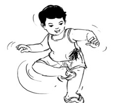How to Play:
- Start by holding the "sipa" (shuttlecock).
- Toss it slightly upwards.
- Kick the "sipa" with your foot, knee, or other allowed body part to keep it airborne.
- Continue kicking it, trying to maintain a continuous flow.
- Count each successful kick.
DUAL PLAYER GAMES
Philippine Traditional Games you can play with a partner!
Jump to Game
GAME 1: Jack n' Poy
Basically the Filipino version of Rock, Paper, Scissors. It's a really easy hand game where you try to outsmart your friend by throwing either a rock, paper, or scissors at the same time.
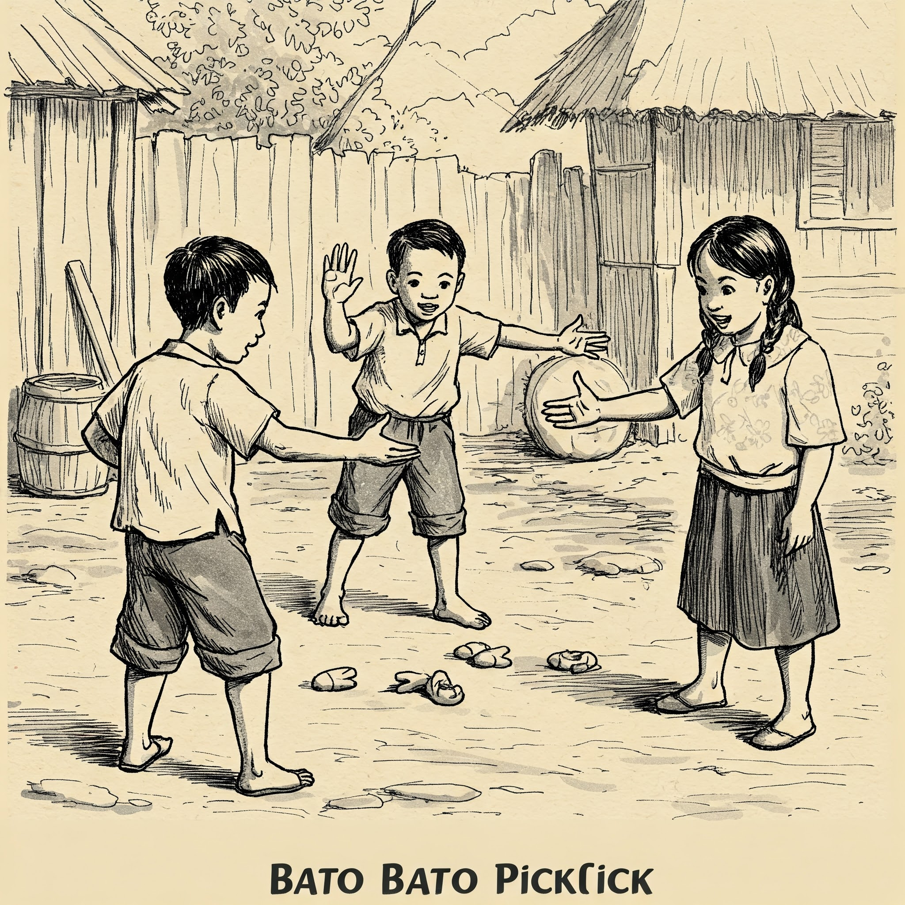How to Play:
- Players say "Jack-en-Poy!" together.
- At the same time, each player shows one hand gesture:
- Rock: A closed fist.
- Paper: A flat, open hand
- Scissors: Two fingers extended in a "V" shape. - Determine the winner of the round based on these rules:
- Rock beats Scissors.
- Scissors beats Paper.
- Paper beats Rock. - If both players show the same hand gesture, it's a tie. Play another round in case of a tie.
- Continue playing rounds.
- The player who wins more rounds overall is the winner of the game.
GAME 2: Pitik Bulag
Traditional Filipino game, involves two players, one with eyes covered, and the other flicks a finger on the hand covering the eyes. The "blind" player tries to guess which finger was used to flick them, and if correct, they switch roles.
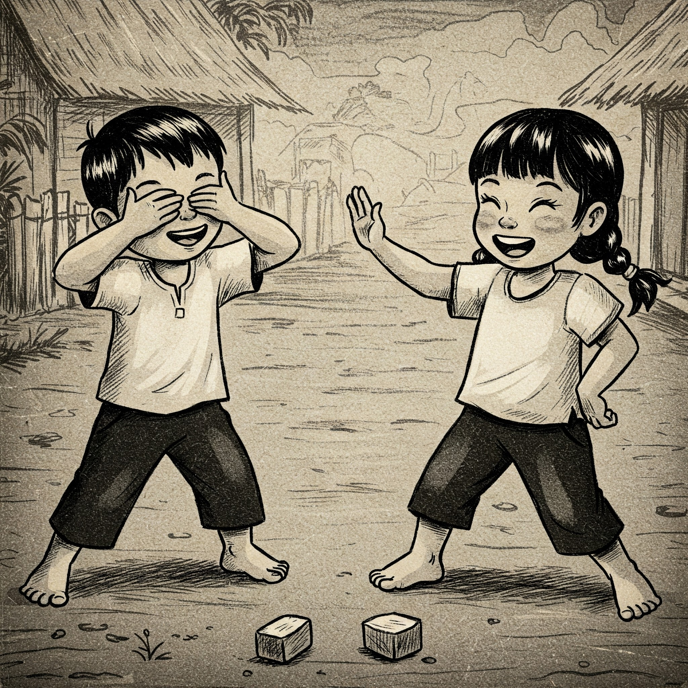How to Play:
- One player covers their eyes and becomes the "blind" player.
- The other player gently flicks one of their fingers against the hand covering the "blind" player's eyes.
- The "blind" player then tries to guess which finger was flicked.
- If the guess is correct:
The players switch roles. The "blind" player now becomes the flicker, and the flicker becomes the "blind" player. - If the guess is incorrect:
The same players continue.
The "blind" player keeps their eyes covered.
The other player flicks a finger again.
GAME 3: Tsato
Traditional Filipino stick game that tests players' hand-eye coordination. Players use two sticks, one longer than the other, to hit a small piece of wood that's partially buried in a slanted hole
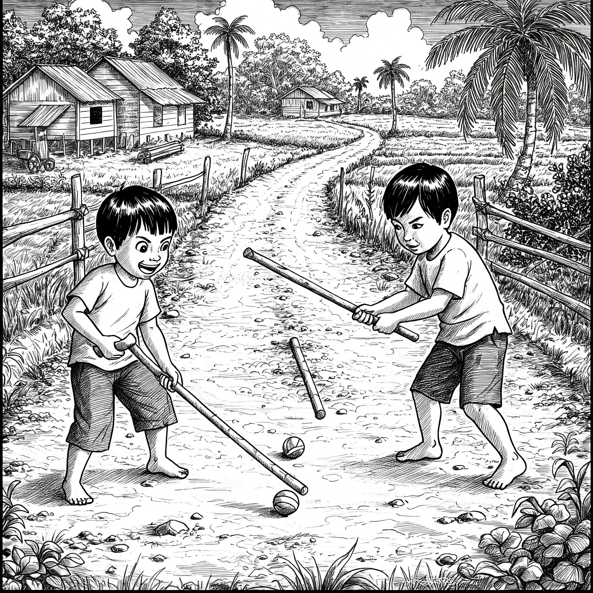How to Play:
- Create a slanted hole in the ground.
- Place a small stick across the opening of the hole.
- One player takes their turn.
- Using a bigger stick, the player hits the small stick out of the hole.
- While the small stick is in the air, the same player tries to hit it again with the bigger stick, aiming to make it travel as far as possible.
- If the small stick is caught by another player after being hit out of the hole or while airborne, the current player gets no points for that turn.
- Measure the distance the small stick traveled using the length of the bigger stick as a unit of measurement.
- Players take turns performing these steps.
- The player who hits the small stick the farthest (accumulating the most distance over agreed-upon rounds or a single successful hit) wins the game.
GAME 4: Dama (Filipino Checkers)
A traditional Filipino board game, similar to checkers, played on an 8x8 checkered board. It's a game of strategy, requiring players to capture all of their opponent's
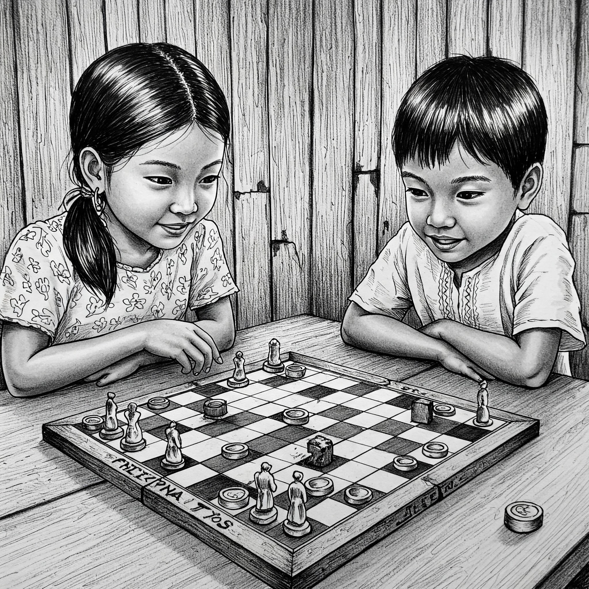How to Play:
- Each player starts with 12 pieces.
- Place the pieces on the dark squares of your side of the board.
- Players take turns moving one of their pieces.
- Pieces can only move diagonally forward one square at a time.
- If an opponent's piece is diagonally adjacent to your piece and there is an empty dark square immediately beyond it in the same diagonal direction, you must jump over the opponent's piece.
- The jumped opponent's piece is captured and removed from the board.
- If after a jump, another opponent's piece is in a position to be jumped (in any forward diagonal direction), you must continue jumping in the same turn. Multiple jumps are allowed in a single turn.
- When one of your pieces reaches the last row (the opponent's starting side) of the board, it becomes a "king."
- A king is typically indicated by placing another piece of the same color on top of it.
- Kings can move diagonally forward or backward one square at a time.
- Kings can also jump and capture opponent's pieces diagonally forward or backward, and continue multiple jumps in any diagonal direction.
- The first player to capture all of their opponent's pieces wins the game.
GAME 5: Holen
A Filipino marble game, is a one-on-one game where players use a "shooter" marble to knock their opponent's marbles out of a designated circle, with the player collecting the marbles they successfully remove.
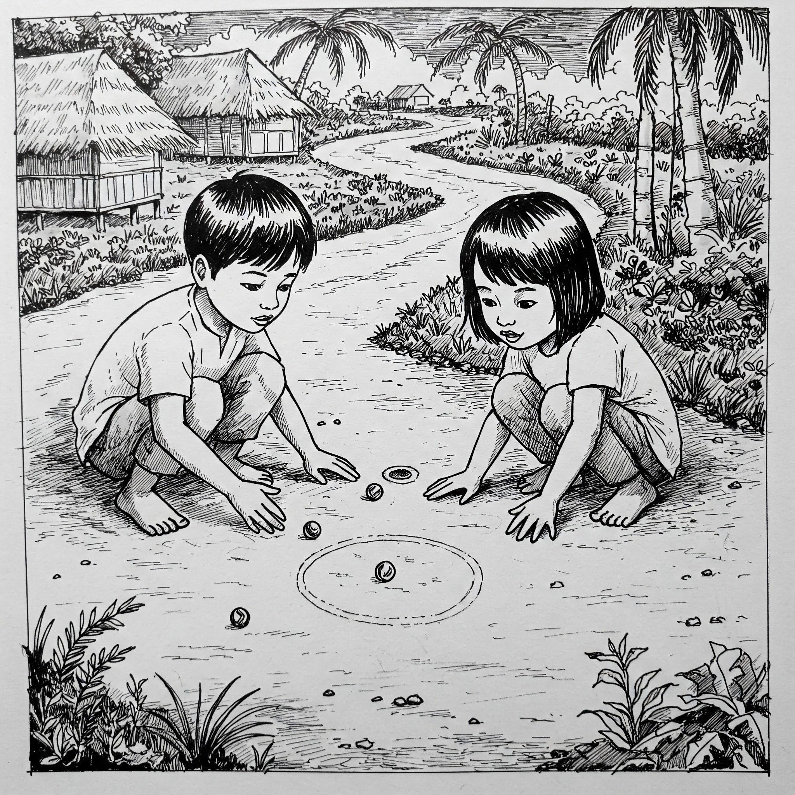How to Play:
- Each player chooses one marble to be their "shooter.".
- The remaining marbles are placed inside a drawn circle on the ground.
- Players take turns flicking their shooter marble.
- Aim your shooter to hit other marbles out of the circle. Each marble knocked out is won by the player who shot it.
- You can also try to hit another player's shooter marble with your own. If you successfully hit their shooter, you typically win one of their marbles (this rule can be agreed upon beforehand).
- Rules for continuing a turn after a successful hit can vary. Sometimes a player gets to shoot again if they knock a marble out. Agree on this before starting.
- The game ends when all the marbles are knocked out of the circle.
- The player who has collected the most marbles at the end of the game is the winner.
TEAM GAMES
Experience the fun of Philippine traditional games with your team!
Jump to Game
GAME 1: Patintero
Patintero is a popular Filipino game involving two teams, but it can also be played by two players. The objective is to avoid being tagged while crossing the "grid" lines.
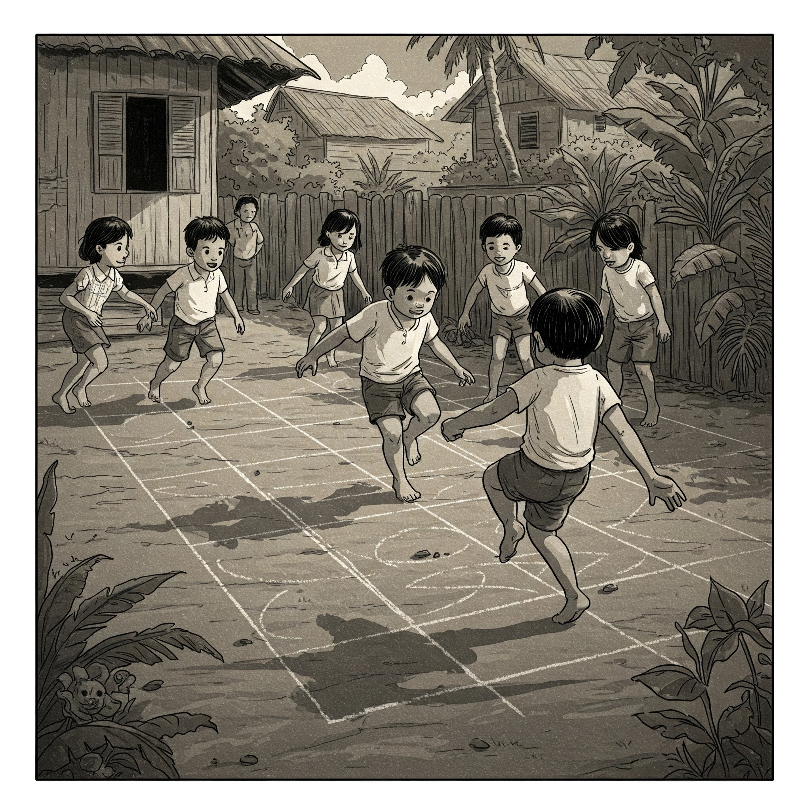How to Play:
- One player is designated as the tagger.
- The other player(s) are the runners.
- A grid of lines is drawn on the ground.
- The runners try to cross the grid lines without being tagged by the tagger.
- The tagger tries to catch the runners while they are crossing the lines.
- If all the runner on the team is tagged, they might become the new tagger
GAME 2: Luksong Tinik
Jumping game where one player or group raises their feet to create "thorns" and the other players must jump over them.
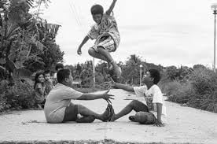How to Play:
- Players sit on the ground, extending their legs forward.
- One player starts by slightlsy raising their feet (these are the initial "thorns").
- The other players take turns jumping over the raised feet. They must jump cleanly without touching the feet.
- If a player successfully jumps over the feet without touching, they proceed to the next round.
- After each successful round where all players have jumped, the player whose feet are being jumped over raises their feet a little higher.
- The players continue taking turns jumping over the increasingly higher feet.
- If a player, during their jump, touches the raised feet, they are eliminated from the game.
- The game continues until only one player remains who has successfully jumped over all the raised foot heights. That player is the winner.
- If all players fail to jump without touching the raised feet, there is no winner, and they typically restart the game.
GAME 3: Langit-Lupa
Game of tag where players have to avoid being tagged, but certain areas called "langit" (heaven) are safe zones.
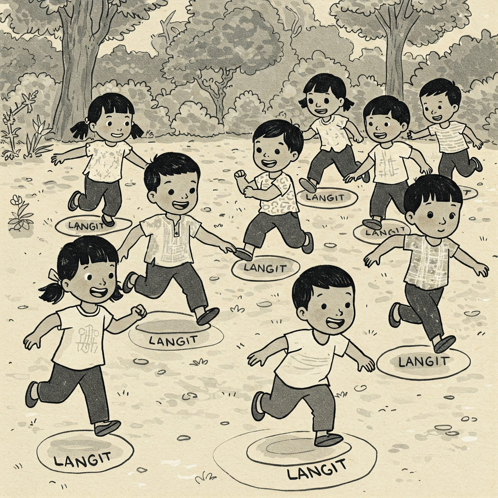How to Play:
- One player is designated as "it" (the tagger).
- The other players are the runners.
- There are designated safe zones called "langit".
- Runners can be safe from being tagged when they are in the "langit" zones.
- The player who is "it" tries to tag the runners who are not in the "langit" zones.
- Once a runner is tagged, they become the new "it".
- The game continues with the new "it" chasing the other players.
- The size and number of "langit" zones can be decided before the game starts.
GAME 4: Chinese Garter
Jumping game involving an elastic garter that is held by two players. The object of the game is to jump over the garter without touching it.
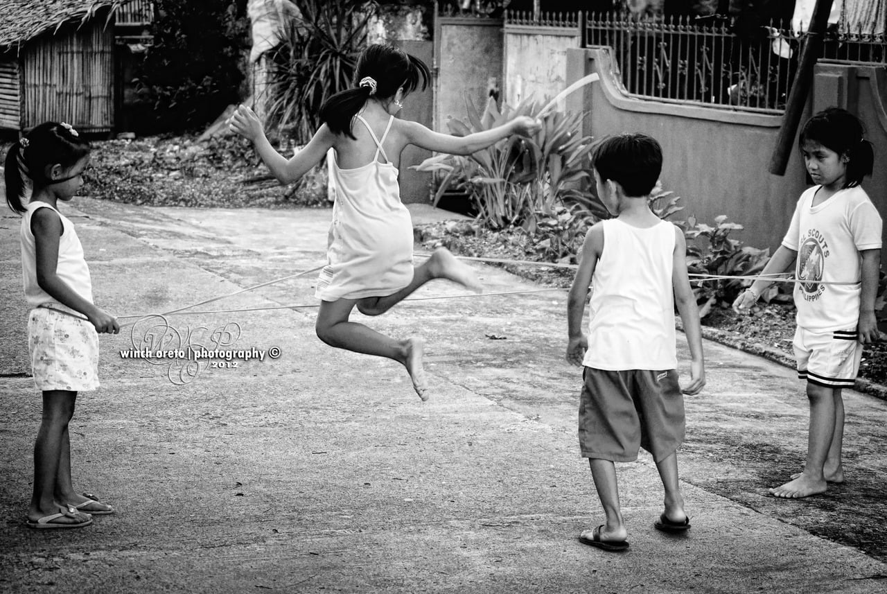How to Play:
- Two players hold the garter at ankle level.
- Other players take turns jumping over the garter.
- If a player successfully jumps without touching the garter, the garter is raised higher for the next round.
- The garter is raised progressively higher (knee level, waist level, etc.).
- If a player touches the garter while jumping, they are eliminated.
- The game continues until only one player remains who can successfully jump over the highest level.
GAME 5: Agawan Base
Game of tag where two teams try to capture each other's "base."
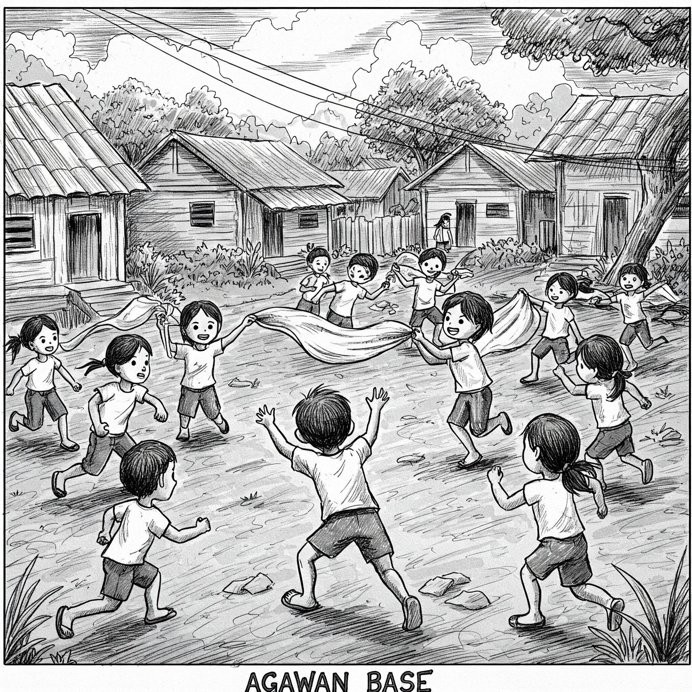How to Play:
- Divide the players into two teams.
- Each team has a designated "base."
- The goal is to capture the opposing team's base without being tagged.
- Players can tag opponents outside their base.
- If a player is tagged, they are "frozen" until a teammate tags them to "unfreeze" them.
- The team that captures the opposing team's base wins.
GAME 6: Habulan
A simple tag game where one player is "it" and tries to tag the other players.
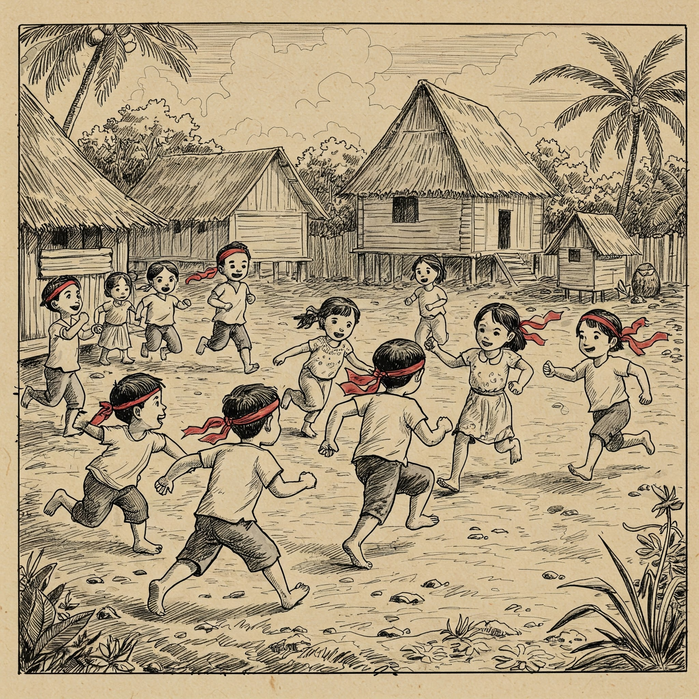How to Play:
- One player is chosen to be "it" (the tagger).
- The other players run away from "it."
- "It" tries to tag the other players.
- When a player is tagged, they become the new "it."
- The game continues with the new "it" chasing the other players.
GAME 7: Bahay-Bahayan
A role-playing game where players pretend to be a family and act out daily life scenarios.
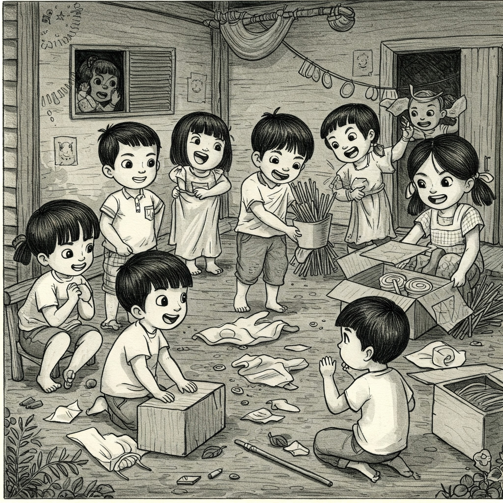How to Play:
- Players assign roles such as mother, father, children, etc.
- They create a "house" using available materials (chairs, blankets, etc.).
- Players act out daily life scenarios, such as cooking, cleaning, going to work, etc.
- The game encourages creativity and imagination.
GAME 8: Piko
A hopscotch game where players throw a "pamato" (stone or other object) into numbered squares and hop through the course.
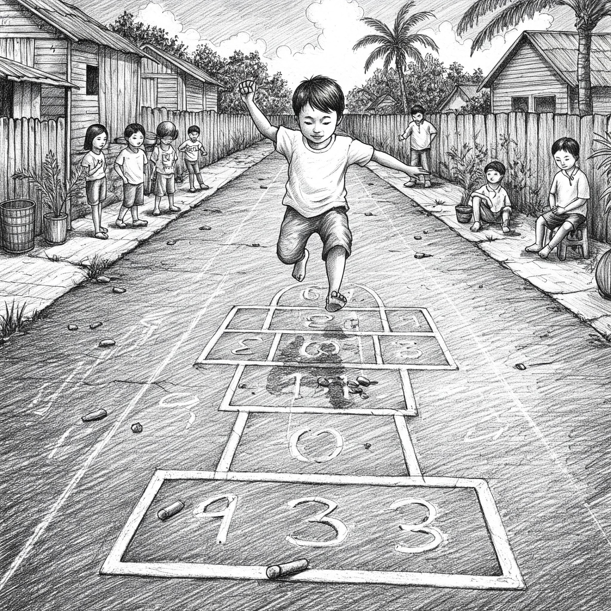How to Play:
- Draw a hopscotch course on the ground.
- Players take turns throwing the "pamato" into the first square.
- They hop through the course, skipping the square with the "pamato."
- On the way back, they pick up the "pamato" and hop out of the course.
- If a player completes the course successfully, they throw the "pamato" into the next square.
- If a player makes a mistake (steps on a line, misses a square, etc.), their turn is over.
- The first player to complete the course wins.
GAME 9: Pabitin
A game where prizes are hung on a bamboo structure, and players jump to grab them.
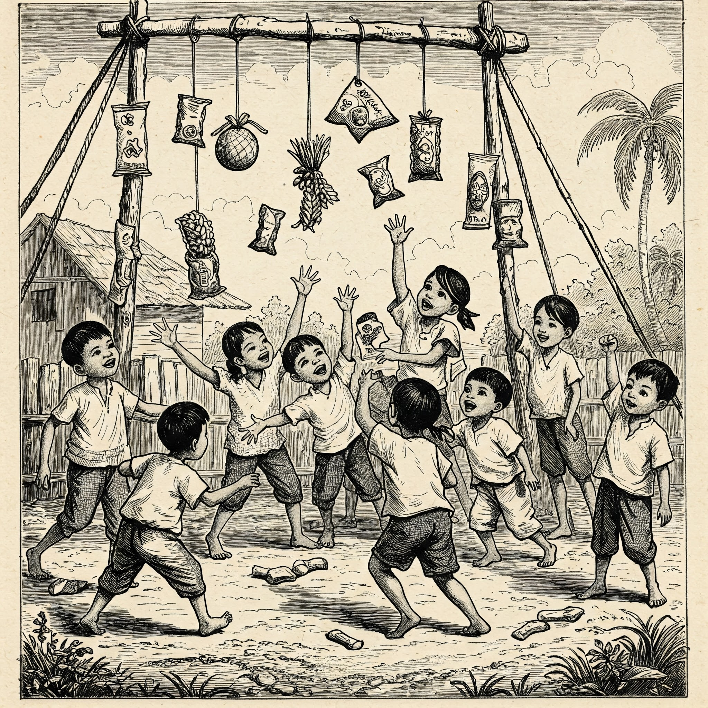How to Play:
- Prizes are hung on a bamboo structure.
- Players take turns jumping to grab the prizes.
- The bamboo structure is raised higher after each round.
- Players who successfully grab a prize are eliminated.
- The game continues until all prizes are grabbed.
GAME 10: Agawan Panyo
A game where two teams try to grab a handkerchief from the center without being tagged.
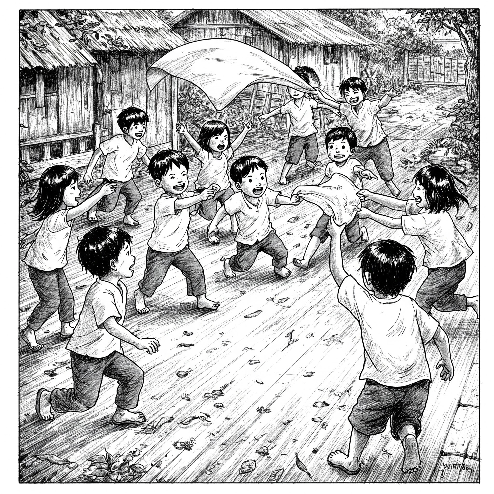How to Play:
- Divide the players into two teams.
- Place a handkerchief in the center.
- Each team sends one player to try to grab the handkerchief.
- The player who grabs the handkerchief tries to return to their team's side without being tagged.
- If tagged, the player from the other team gets a point.
- The team with the most points wins.